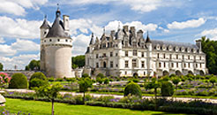
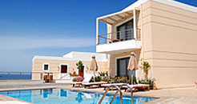

France Tours & Vacations
Admired the world over for its impeccable taste and effortless style, France celebrates beauty, sophistication and style. From elegant chateaux and grand boulevards to immaculately manicured country roads and charming villages; fairytale castles, thousand-year-old cathedrals, and even older vineyards. This is the country that taught the world about joie de vivre and savoir-faire, about high culture and haute couture. France has everything for discerning traveler. Galveston is truly a "Treasure Island" when it comes to our rich architectural heritage.Galveston is truly a "Treasure Island" when it comes to our rich architectural heritage.

Galveston Architectural Heritage Tour
Galveston is truly a "Treasure Island" when it comes to our rich architectural heritage. The Island boasts beautiful examples of commercial buildings, churches, grand mansions, and simple family houses.